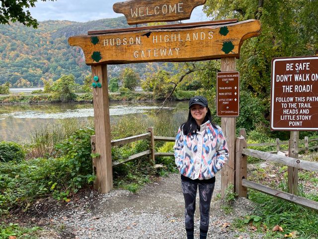
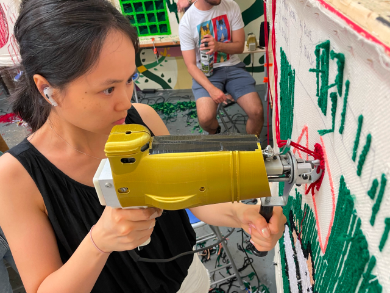
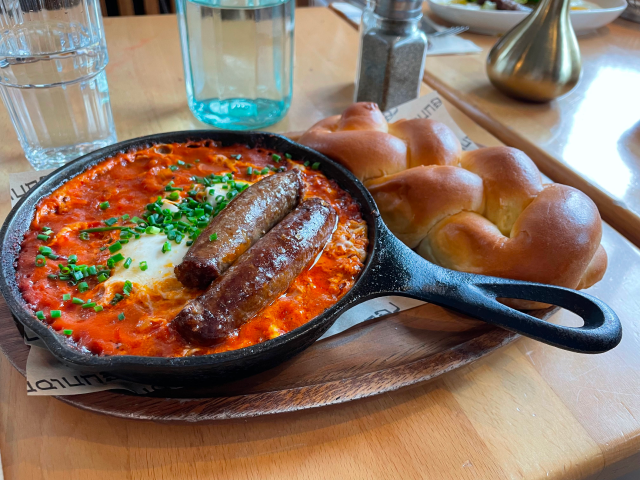
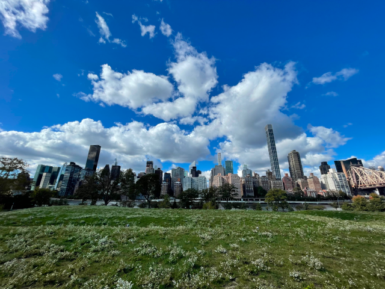
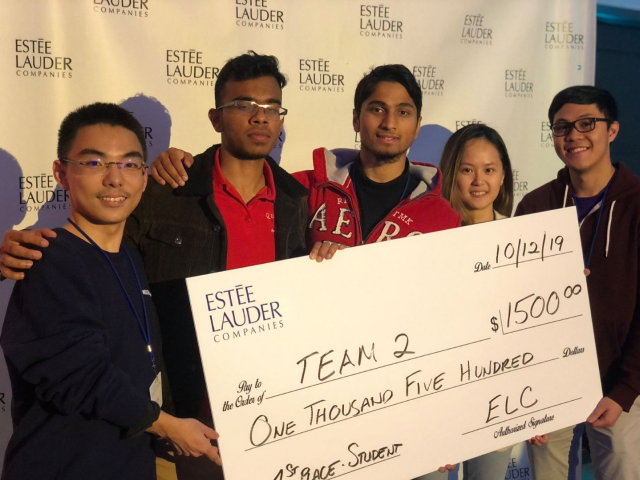
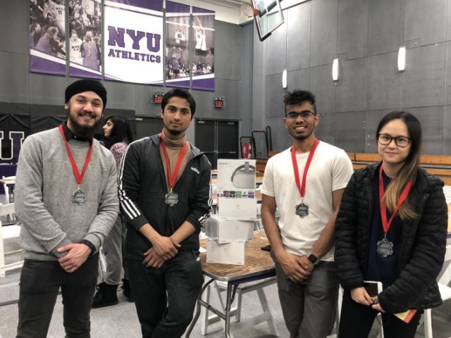

About Me
I'm a product designer with an interdisciplinary background in graphic design, digital marketing, and finance based in New York City.
I love creating products that are both useful and visually appealing. I've honed my skills through participation in over 8 hackathons and experience working in fast-paced startup environments.
I aspire to work with empathy-driven teams to create meaningful products that make a difference in people's lives.
In my free time, I like to explore the city, try out new food recipes and participate in hackathons!

I like to go hiking with friends to get some fresh air in my spare time. Hiking gives me the opportunity to reflect on my life and it's an effective way of meditation.

I'm also into arts and crafts, and this is me tufting a rug. I spent almost 4 hours in the studio working on it with my friend. It was a lot of fun and I enjoyed the creative process.

As a foodie, I love to try new restaurants in the city. Sometimes I like to recreate new food I discovered at home when I can, I think it's an interesting way to try new recipes.

I like to take photos while exploring different parts of the city. This photo was taken on Roosevelt Island. I liked how nature and contemporary architecture coexisted.

In my spare time, I participate in hackathons as a designer. I have been very fortunate to work with a group of talented developers at the Estee Lauder Hackathon.

Just before the covid pandemic happened, I participated in my last in-person hackathon at NYU and we won the Best User Experience award, sponsored by Meta.